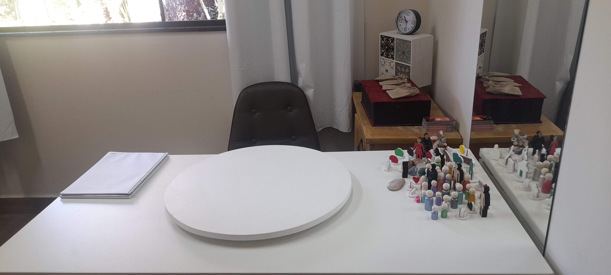
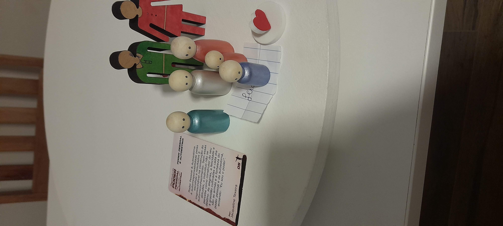
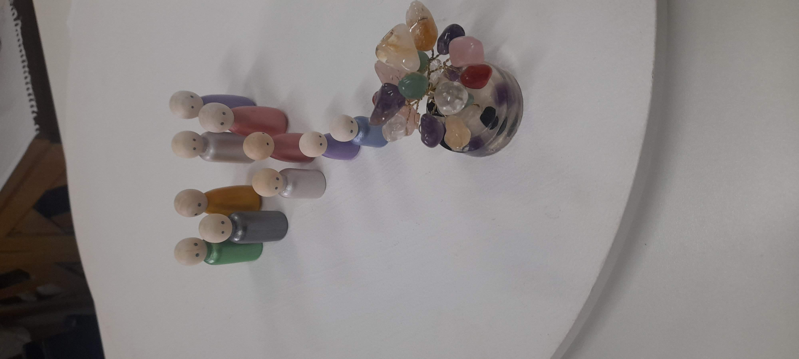
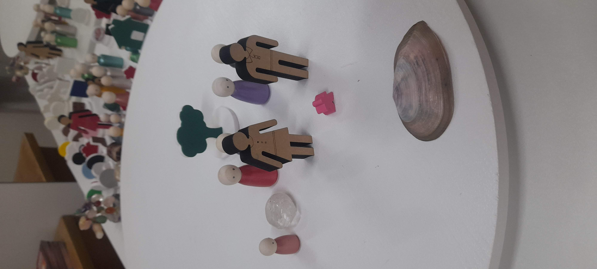
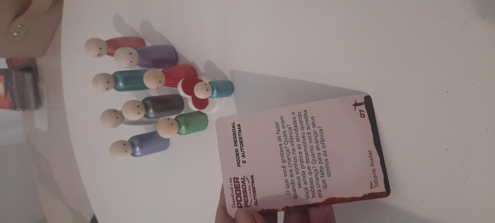
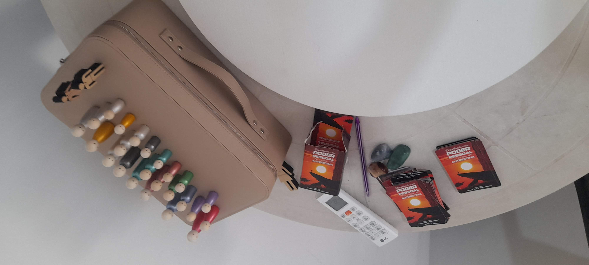
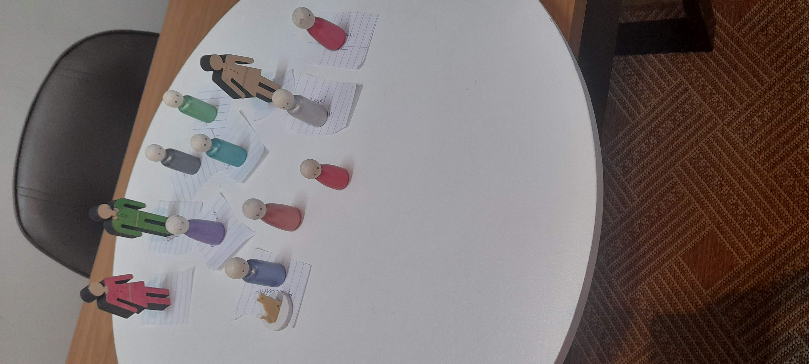
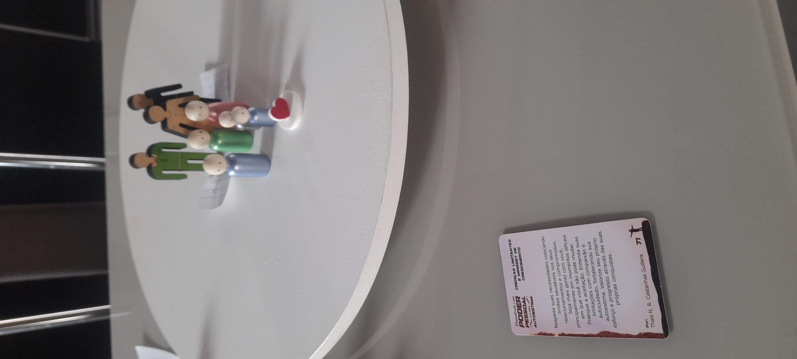

Bem-vindo ao meu espaço
Magali Depresbiteris
Terapeuta Sistêmica e Integrativa · Consteladora Familiar Sistêmica



Terapeuta Sistêmica e Integrativa e Consteladora Familiar Sistêmica. Acompanho pessoas que sentem que chegou o momento de olhar para a própria história com mais consciência, acolhimento e profundidade.
Um espaço para reconhecer padrões, compreender vínculos e perceber os movimentos que influenciam sua forma de viver, sentir e se relacionar.
Por meio da escuta terapêutica, da abordagem sistêmica e da constelação familiar, conduzo processos de reconexão, fortalecimento interno e novos posicionamentos diante da vida.
O meu trabalho se constrói a partir de uma escuta cuidadosa das experiências que se repetem, dos vínculos que marcam e dos sentimentos que ainda buscam compreensão. Acredito que o processo terapêutico é um caminho de consciência, onde cada pessoa pode olhar para sua história com mais clareza e responsabilidade.
Minha prática integra a abordagem sistêmica, a constelação familiar, a psicologia analítica e os estudos em psicanálise clínica. Esses referenciais me permitem acolher tanto o que é dito quanto o que se revela nas entrelinhas. O processo acontece com presença, respeito e atenção à singularidade de cada pessoa.
Conduzindo uma sessão de Constelação Familiar Sistêmica
Abordagem Sistêmica
Olho para a pessoa de forma ampla, considerando sua história, seus vínculos e os contextos que influenciam sua forma de sentir e agir.
Constelação Familiar
Tornamos visíveis dinâmicas e vínculos que muitas vezes permanecem ocultos, mas que influenciam sentimentos, escolhas e padrões de repetição.
Psicologia Analítica
Escuto além das palavras, reconhecendo também o que se expressa nos silêncios, nas emoções e nos padrões que se repetem ao longo da vida.
Psicanálise Clínica
Amplio o olhar sobre a escuta, os movimentos internos e as camadas mais profundas da experiência humana.
Às vezes, pela dor de uma repetição. Às vezes, por um conflito nas relações. Outras vezes, por sentir que algo dentro de si pede mais presença, mais consciência e um novo lugar diante da vida.
Meus atendimentos são conduzidos com escuta, acolhimento e profundidade, respeitando a história, o tempo e a singularidade de cada processo. Através da Terapia Sistêmica e Integrativa e da Constelação Familiar Sistêmica, acompanho pessoas que desejam olhar para seus vínculos, reconhecer padrões emocionais e familiares, compreender movimentos internos e abrir espaço para novos posicionamentos.
Não se trata de apagar a história, mas de olhar para ela de outro lugar. Um lugar com mais consciência, mais verdade e mais força.
Cada atendimento acontece com escuta, cuidado e respeito ao seu processo. Escolha o formato que melhor se encaixa ao seu momento.

01 — Serviço
Um espaço de escuta e acompanhamento para quem busca compreender com mais profundidade suas emoções, relações e padrões de comportamento. A abordagem olha para a pessoa de forma ampla, considerando sua história, seus vínculos e os contextos que influenciam sua forma de sentir e agir.
02 — Serviço
Um espaço de escuta e investigação profunda voltado para quem deseja compreender questões pessoais, familiares, emocionais ou relacionais sob uma perspectiva sistêmica. Com o auxílio dos bonecos, é possível tornar visíveis dinâmicas e vínculos que influenciam sentimentos, escolhas e padrões de repetição ao longo da vida.
03 — Processo
Um processo terapêutico completo para quem sente que precisa pausar, se escutar com mais profundidade e reorganizar sua forma de estar na vida. Inclui uma sessão de Constelação Familiar Sistêmica com bonecos + quatro encontros online e semanais, com acompanhamento contínuo.
Para quem deseja ir além da compreensão intelectual, se implicar no próprio processo e construir, com mais consciência e presença, uma nova forma de se posicionar diante da vida.
Sessão de Constelação Familiar Sistêmica com bonecos — acesso às dinâmicas invisíveis que influenciam suas relações, escolhas e emoções.
Quatro encontros online e semanais — integração das percepções, com acompanhamento e direcionamento contínuo.
Consolidação dos novos movimentos — clareza, acolhimento e sustentação para que mudanças reais se consolidem no dia a dia.
Cada pessoa que chega traz consigo uma história singular, um ritmo próprio e um momento único de vida. Esses relatos refletem experiências vividas em processos terapêuticos conduzidos com presença, respeito e cuidado.
"O processo me ajudou a compreender padrões que eu repetia sem perceber. Hoje me relaciono de forma muito mais consciente comigo mesma e com as pessoas ao meu redor."
"A constelação com bonecos foi uma experiência reveladora. Ver representado o que eu sentia trouxe uma clareza que eu não conseguia alcançar de outra forma."
"A Jornada de Reposicionamento me deu ferramentas reais para sustentar as mudanças. A Magali tem uma escuta profunda e acolhedora que faz toda a diferença no processo."




Se você sente que chegou o momento de olhar para a sua história com mais presença, acolher o que precisa ser visto e abrir espaço para novos movimentos, será um prazer te acompanhar.
Os atendimentos acontecem de forma individual, com escuta, cuidado e respeito ao seu processo.